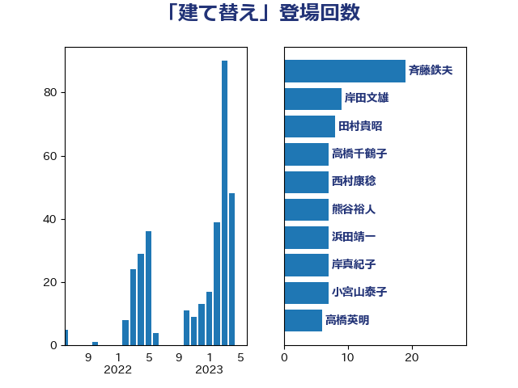

単語「建て替え」

| 斉藤鉄夫 | 公明党 | 19 回 |
| 岸田文雄 | 自由民主党 | 9 回 |
| 田村貴昭 | 日本共産党 | 8 回 |
| 高橋千鶴子 | 日本共産党 | 7 回 |
| 西村康稔 | 自由民主党 | 7 回 |
| 熊谷裕人 | 立憲民主党 | 7 回 |
| 浜田靖一 | 自由民主党 | 7 回 |
| 岸真紀子 | 立憲民主党 | 7 回 |
| 小宮山泰子 | 立憲民主党 | 7 回 |
| 高橋英明 | 日本維新の会 | 6 回 |
| 守島正 | 日本維新の会 | 6 回 |
| 赤木正幸 | 日本維新の会 | 5 回 |
| 篠原孝 | 立憲民主党 | 5 回 |
| 笠井亮 | 日本共産党 | 5 回 |
| 松本剛明 | 自由民主党 | 5 回 |
| 小池晃 | 日本共産党 | 5 回 |
| 小森卓郎 | 自由民主党 | 5 回 |
| 山本博司 | 公明党 | 4 回 |
| 小沢雅仁 | 立憲民主党 | 4 回 |
| 古川禎久 | 自由民主党 | 4 回 |
| 馬場伸幸 | 日本維新の会 | 3 回 |
| 金子俊平 | 自由民主党 | 3 回 |
| 野田国義 | 立憲民主党 | 3 回 |
| 輿水恵一 | 公明党 | 3 回 |
| 芳賀道也 | 国民民主党 | 3 回 |
| 羽田次郎 | 立憲民主党 | 3 回 |
| 泉健太 | 立憲民主党 | 3 回 |
| 横山信一 | 公明党 | 3 回 |
| 柳ヶ瀬裕文 | 日本維新の会 | 3 回 |
| 三浦靖 | 自由民主党 | 3 回 |
| 西岡秀子 | 国民民主党 | 2 回 |
| 藤木眞也 | 自由民主党 | 2 回 |
| 舩後靖彦 | れいわ新選組 | 2 回 |
| 玉木雄一郎 | 国民民主党 | 2 回 |
| 滝波宏文 | 自由民主党 | 2 回 |
| 河西宏一 | 公明党 | 2 回 |
| 永岡桂子 | 自由民主党 | 2 回 |
| 枝野幸男 | 立憲民主党 | 2 回 |
| 星北斗 | 自由民主党 | 2 回 |
| 岩本剛人 | 自由民主党 | 2 回 |
| 寺田静 | 無所属 | 2 回 |
| 宮本岳志 | 日本共産党 | 2 回 |
| 古川直季 | 自由民主党 | 2 回 |
| 中野洋昌 | 公明党 | 2 回 |
| 高木真理 | 立憲民主党 | 1 回 |
| 馬場雄基 | 立憲民主党 | 1 回 |
| 阿部知子 | 立憲民主党 | 1 回 |
| 鈴木義弘 | 国民民主党 | 1 回 |
| 鈴木俊一 | 自由民主党 | 1 回 |
| 金子恭之 | 自由民主党 | 1 回 |
| 遠藤良太 | 日本維新の会 | 1 回 |
| 豊田俊郎 | 自由民主党 | 1 回 |
| 谷公一 | 自由民主党 | 1 回 |
| 萩生田光一 | 自由民主党 | 1 回 |
| 茂木敏充 | 自由民主党 | 1 回 |
| 石川博崇 | 公明党 | 1 回 |
| 田畑裕明 | 自由民主党 | 1 回 |
| 甘利明 | 自由民主党 | 1 回 |
| 渡辺周 | 立憲民主党 | 1 回 |
| 浦野靖人 | 日本維新の会 | 1 回 |
| 浜口誠 | 国民民主党 | 1 回 |
| 浅田均 | 日本維新の会 | 1 回 |
| 梅村聡 | 日本維新の会 | 1 回 |
| 杉尾秀哉 | 立憲民主党 | 1 回 |
| 本庄知史 | 立憲民主党 | 1 回 |
| 末次精一 | 立憲民主党 | 1 回 |
| 末松信介 | 自由民主党 | 1 回 |
| 斎藤洋明 | 自由民主党 | 1 回 |
| 岬麻紀 | 日本維新の会 | 1 回 |
| 岩渕友 | 日本共産党 | 1 回 |
| 岡田克也 | 立憲民主党 | 1 回 |
| 岡本あき子 | 立憲民主党 | 1 回 |
| 山田美樹 | 自由民主党 | 1 回 |
| 山本順三 | 自由民主党 | 1 回 |
| 室井邦彦 | 日本維新の会 | 1 回 |
| 太田房江 | 自由民主党 | 1 回 |
| 大塚耕平 | 国民民主党 | 1 回 |
| 塩田博昭 | 公明党 | 1 回 |
| 塩川鉄也 | 日本共産党 | 1 回 |
| 城井崇 | 立憲民主党 | 1 回 |
| 國場幸之助 | 自由民主党 | 1 回 |
| 古賀之士 | 立憲民主党 | 1 回 |
| 古川元久 | 国民民主党 | 1 回 |
| 前川清成 | 日本維新の会 | 1 回 |
| 保岡宏武 | 自由民主党 | 1 回 |
| 佐藤啓 | 自由民主党 | 1 回 |
| 伊藤孝江 | 公明党 | 1 回 |
| 伊波洋一 | 無所属 | 1 回 |
| 井野俊郎 | 自由民主党 | 1 回 |
| 井出庸生 | 自由民主党 | 1 回 |
| 井上哲士 | 日本共産党 | 1 回 |